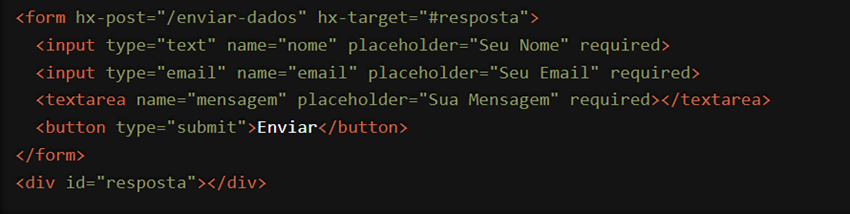

O atributo `hx-post` do HTMX é uma ferramenta poderosa que permite enviar dados para o servidor usando uma requisição HTTP POST diretamente a partir de elementos HTML, sem a necessidade de escrever código JavaScript.
Como Funciona?
Com `hx-post`, você pode simplificar enormemente a interação entre o frontend e o backend. Veja um exemplo básico:

Neste exemplo, quando o usuário clica em "Enviar", o HTMX faz uma requisição POST para a URL especificada em `hx-post` (neste caso, "/enviar-dados"). A resposta do servidor é então inserida no elemento alvo especificado em `hx-target` (neste caso, o `div` com id "resposta").